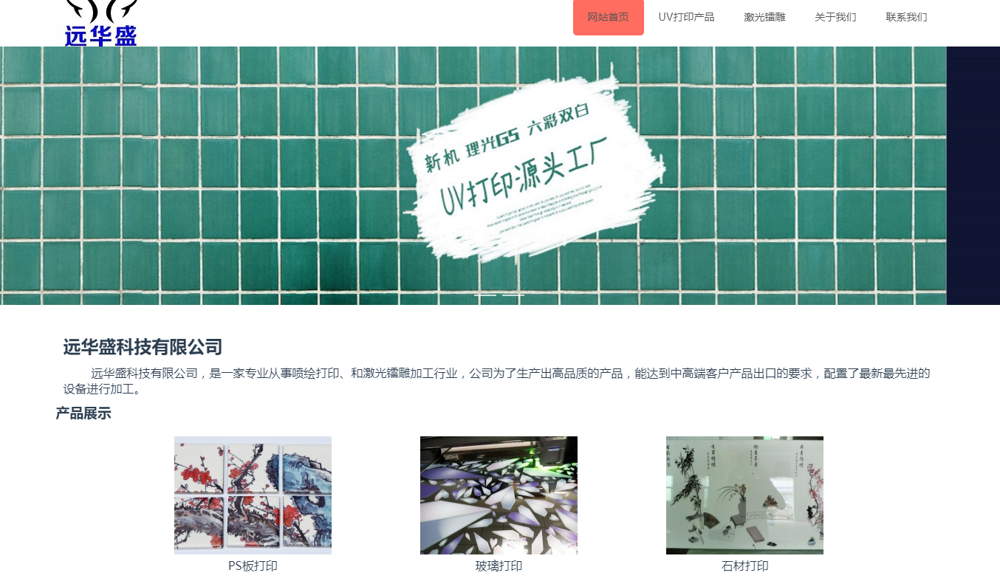
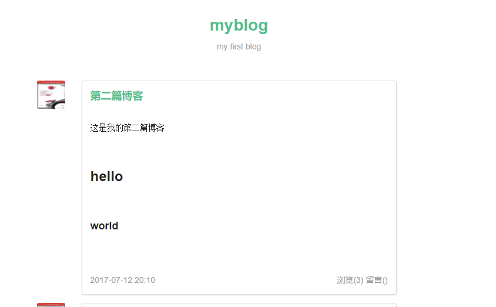
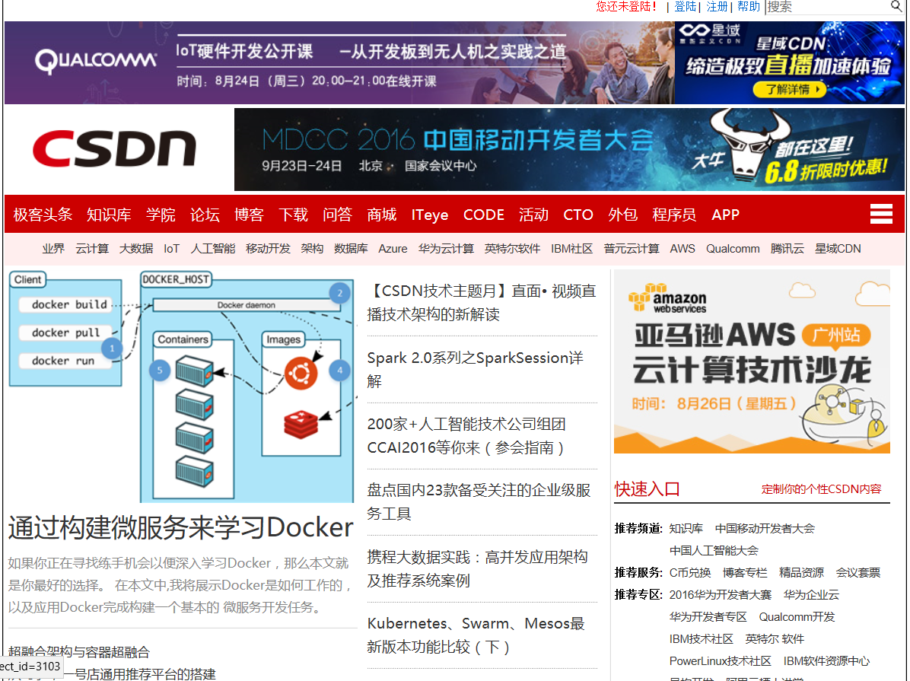

-
- 基本信息
- 个人信息: 朱庆广 / 男
- 在读院校: 北京邮电大学 / 硕士
- 学习年限: 一年半
- 博客: https://zhuqingguang.github.io
- GitHub: www.github.com/zhuqingguang
-
- 相关学习与工作经验
自学阶段(2016.8 - 2017.1)
-
自主学习
自己从2016年8月初开始自学前端开发，在此之前，因为老师的项目原因，学习过一段时间的Java和Anroid开发，本科期间也参与过各种竞赛，对于编程的学习能非常快的上手。
自学期间，自己翻阅了《JavaScript高级程序设计》《CSS3权威指南》等经典书籍，也实践了菜鸟教程，慕课网的一些教程，熟练掌握了各种基础知识，对于前端开发具有很牢固的基础。
实习期（2016.12.14 - 2017.03.30）
-
公司内部项目
负责调试公司的一个内部项目，主要用了ECharts库与Angular2框架。所以在此期间，我深入的学习了Angular2，并了解了前端的各种新技术，包括ES6, TypeScript, Webpack工具，SASS等。
由于是公司内部项目，无法进行预览，我的主要工作也是负责bug的调试与解决。
在这个阶段，我在公司前辈的指导下，接触到很多学习开发的新方式，也开始看各种官方文档与英文文档，能很好的全面的了解某一项技术。在此期间也开始尝试在 简书 上写博客。
自主开发期（2017.03.07 - 至今）
-
学校项目 源代码
作为主力，与另一名同伴负责开发学校的ATF自动化构建项目。这个项目大量使用了 Vue, BootStrap 以及 Jquery，我也熟练掌握了 这些框架与第三方库，对于ES6的使用也很多，这让我深刻理解了JS语言的新特性。
期间，还使用了 zTree、handsontable等插件，大大提高了解决问题的能力。
个人项目
-
基于Vue的小型展示网站 源代码 Site
这是帮别人做的一个小型展示网站，整个项目基于 vue-cli搭建， 没有使用后台，而是使用github来托管。通过Ajax动态获取存放于github的json数据。
开发的时候也遇到了一些问题，现在已经全部解决，整个过程大大提升了我对Vue以及Webpack的掌握。
 -
基于Noejs+MongoDB的博客系统 Site
回到学校后，学习了Nodejs，并动手写了一个简单的博客系统，熟悉了Nodejs的基本知识，以及后台开发流程。对于Nodejs的基本API也能很快的上手使用。
由于当时主要希望学习一下Node，所以对于界面没有进行细致的调整与美化。
 -
简单模仿京东商城 源代码 Demo
这是初学前端阶段，自己把学到的知识应用起来，做的一个简易版电商网站，后台是使用PHP搭建的，现在托管在一家虚拟云上。
这个项目做完之后，自己对HTML， CSS以及JS有了更加深入的了解，也接触到了很多容易踩坑的地方。
-
慕课网动画 源代码 Demo
这是按照慕课网的教程做的一个动画，之后自己又使用新的方法重新写了一遍，学习了CSS3动画与异步Promise的使用。
整个案例中，对于代码的封装与JS中面向对象的编程方式也有体现，自己从中收获了很多。
-
模仿CSDN首页 源代码 Demo
第一次写CSS页面，简单模仿了CSDN的首页

-
- 技能清单
前端
-
HTML / CSS / JS
熟练掌握各种基本知识，能熟练地进行开发，熟练掌握前沿框架Vue，流行的Webpack打包工具。
后端
-
Node.js
了解 Node.js 的开发，可以简单开发后台服务器，能快速熟练地查询Node API。
博客与社区
-
近期在Segmentfault上相对活跃，发表了几篇博客。
能熟练地查看MDN，W3等比较经典的外文文档，能获得权威的知识来源。也能熟练准确的翻译外文教程与博文。
能写出详细易懂的博客教程，请参考我的 博客。